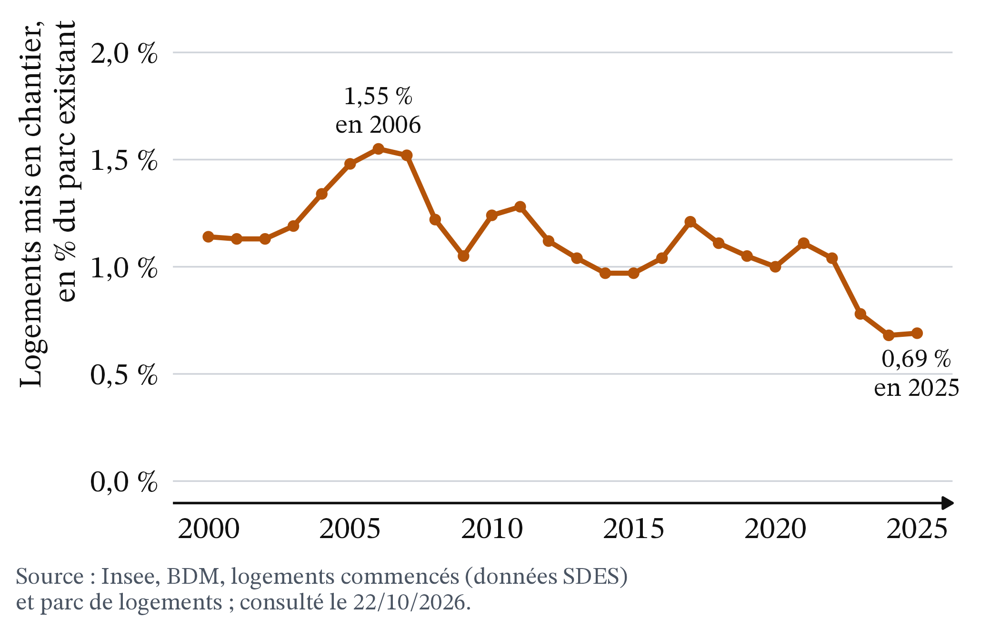
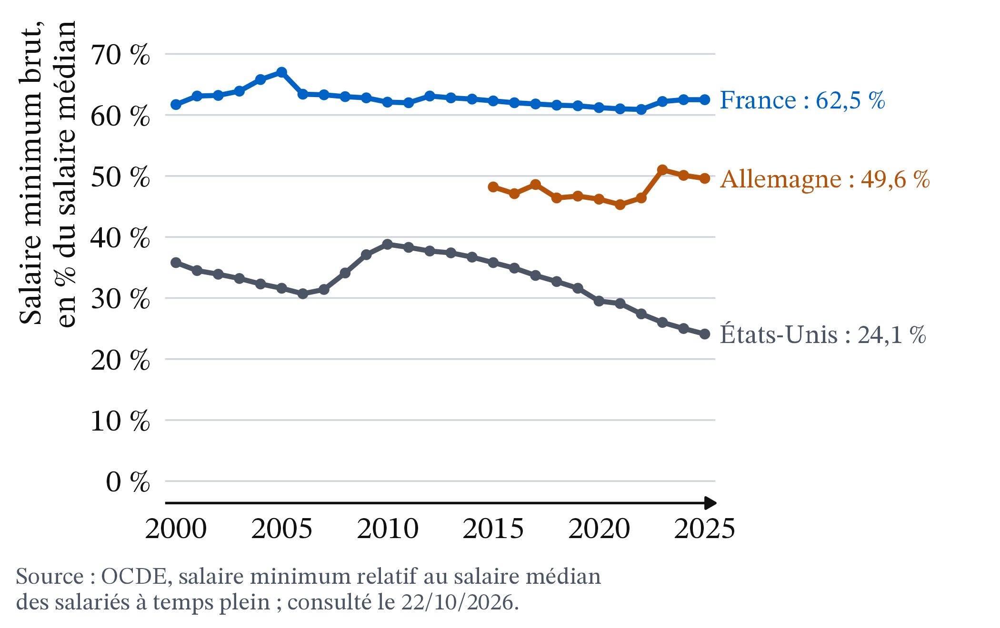
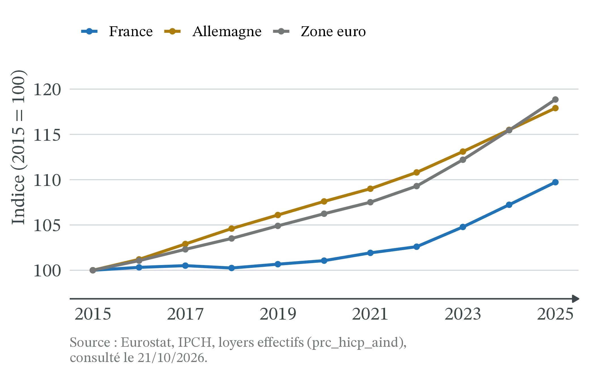
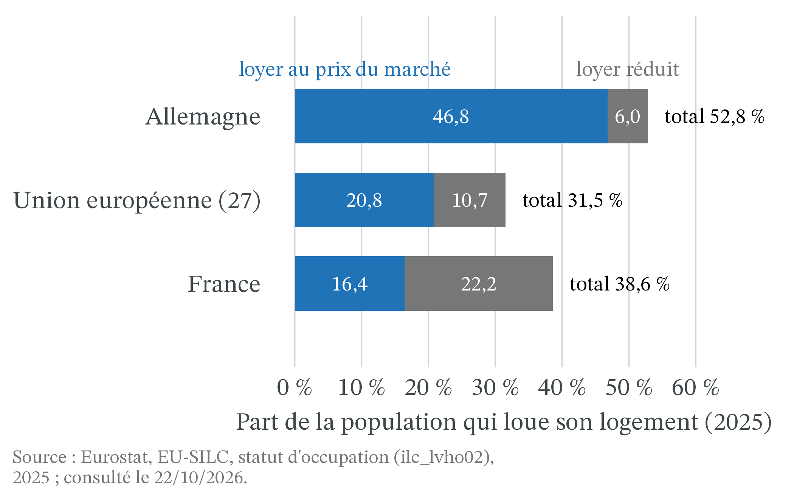
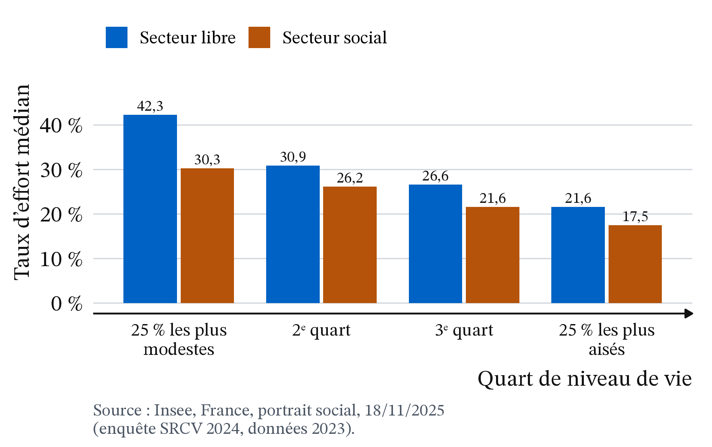
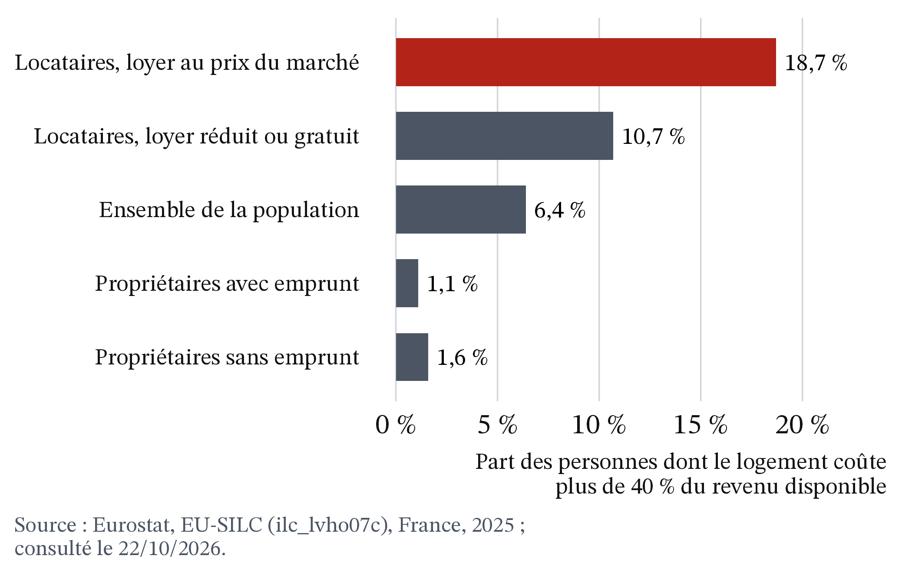

Faut-il encadrer les loyers ?
CM 4 · Partie I · Marchés, prix et régulations
Prix plafond, surplus, perte sèche, évaluations empiriques.
- Offre, demande, équilibre : la quantité offerte augmente avec le prix, la quantité demandée diminue. Au prix d’équilibre P*, elles sont égales, à Q*.
- Prix plafond, prix plancher : un prix maximal (plafond) ou minimal (plancher) imposé, en général par la loi. L’encadrement des loyers est un prix plafond ; le SMIC est un prix plancher du travail.
- Pénurie et rationnement : quand le prix ne peut pas monter jusqu’à P*, la quantité demandée dépasse la quantité offerte. Il faut alors répartir le bien autrement que par le prix : file d’attente, critère (dossier), quota, ou encore relations et hasard.
- Consentement à payer : le prix maximal qu’un acheteur accepte de payer ; c’est la hauteur de la demande.
- Élasticité de l’offre : une offre est peu élastique, ou rigide, quand la quantité offerte réagit peu au prix.
- Positif et normatif : décrire ce qui est, ou juger ce qui devrait être.
1 La question
Se loger pèse lourd dans le budget des locataires du secteur libre (le parc privé, hors logement social). En 2023, en France métropolitaine, la moitié d’entre eux consacrent plus de 29,6 % de leur revenu à leur logement (loyer, charges, eau, énergie, assurance), aides au logement déduites. Pour ceux qui font partie des 25 % de ménages les plus modestes, ce taux d’effort médian atteint 42,3 % (Insee, France, portrait social, 18/11/2025).
Depuis le 1er juillet 2019 à Paris, puis notamment à Lille, Lyon, Montpellier, Bordeaux et dans plusieurs communes de Seine-Saint-Denis, le loyer d’un nouveau bail ne peut pas dépasser un plafond fixé chaque année par le préfet (rapport Chapelle et Fack, mai 2026). En octobre 2026, 9 territoires et 70 communes appliquent cet encadrement (Sénat, octobre 2026). L’expérimentation arrive à son terme le 23 novembre 2026 (Chapelle et Fack, mai 2026 ; Sénat, octobre 2026), et son avenir se discute au Parlement (voir « Et le droit ? »).
La question de la séance : faut-il encadrer les loyers ? La théorie prédit qu’un plafond crée une pénurie. On va mesurer de combien, pour qui et à quel horizon, puis confronter cette prédiction aux évaluations faites en France et aux États-Unis.
2 Apports théoriques
2.1 Un plafond sous le prix d’équilibre ne supprime pas la rareté
1976 · UPI, domaine public, Wikimedia Commons
Milton Friedman et George J. Stigler (1946), Roofs or Ceilings? The Current Housing Problem, Irvington-on-Hudson (New York), Foundation for Economic Education · école de Chicago (néoclassique). Les plafonds de loyer ne font pas disparaître le manque de logements : ils remplacent la répartition par le prix par une répartition « par le hasard et le favoritisme » (notre traduction), et découragent l’offre. Plafonds et pénurie, écrivent-ils, se perpétuent l’un l’autre.
C’est une brochure publiée par un think tank libéral, pas un article évalué par des pairs, mais son argument est devenu un classique. Les auteurs comparent San Francisco après le séisme de 1906, sans plafond, et en 1946, sous plafond. En 1906, les petites annonces comptent 1 recherche de logement pour 10 offres ; en 1946, 375 recherches pour 10 offres (Friedman et Stigler, 1946). La rareté se voit alors dans les files d’attente, plus dans le prix.
Définition 1 (Prix plafond contraignant) Un prix plafond, noté Pmax, est contraignant s’il est fixé sous le prix d’équilibre P*. Il empêche alors le prix d’atteindre P*. Un plafond fixé au-dessus de P* n’a aucun effet : le prix d’équilibre le respecte déjà.
Définition 2 (Surplus du consommateur, surplus du producteur) Le surplus du consommateur additionne, pour tous les acheteurs, l’écart entre le prix maximal que chacun était prêt à payer et le prix payé. Sur le graphique offre-demande, c’est l’aire entre la courbe de demande et le prix. Le surplus du producteur est l’aire entre le prix et la courbe d’offre. Leur somme, le surplus total, mesure le gain que l’échange procure à l’ensemble des participants.
Définition 3 (Perte sèche) La perte sèche est la baisse du surplus total par rapport à la quantité d’équilibre concurrentiel, celle qui rend le surplus total le plus grand. Ici, une intervention écarte le marché de son équilibre : des échanges n’ont plus lieu, alors que l’acheteur était prêt à payer plus que ce que le bien coûtait au vendeur.
2.2 L’offre de logements est rigide à court terme, souple à long terme
À court terme, le parc est donné : un bailleur ne fait pas disparaître son appartement parce que le loyer baisse. L’offre est peu élastique. À long terme, il peut le vendre à un ménage qui l’habitera, le louer en meublé de tourisme ou moins l’entretenir, et les investisseurs construisent moins de logements à louer : l’offre devient plus élastique.
Un ordre de grandeur le confirme (Figure 2) : de 2000 à 2025, les logements mis en chantier chaque année représentent entre 0,68 % (2024) et 1,55 % (2006) du parc existant, et 0,69 % en 2025. L’offre de logements est donc, pour l’essentiel, le parc déjà construit : elle ne change que lentement, au rythme de ce flux.
Le rapport d’évaluation remis au gouvernement en mai 2026 résume ainsi la théorie : l’encadrement est « un instrument redistributif à court terme, mais générateur de rationnement, de pertes de bien-être et de mauvaise allocation à long terme » (Chapelle et Fack, mai 2026, § 3.1.1).
La logique se lit comme une chaîne de causalité, à deux horizons (tableau 1).
| Étape | Court terme | Long terme |
|---|---|---|
| 1. Le plafond Pmax est fixé sous P* | Le loyer des nouveaux baux baisse | Le loyer des nouveaux baux reste bas |
| 2. Réaction de l’offre | Quasi nulle : le parc est donné | Les bailleurs vendent, passent en meublé de tourisme, entretiennent moins ; on construit moins |
| 3. Réaction de la demande | La quantité demandée augmente | La quantité demandée reste élevée |
| 4. Résultat | Pénurie modérée, rationnement hors prix | Pénurie plus forte, perte sèche plus grande |
2.3 Aux États-Unis, les évaluations retrouvent la baisse de l’offre
Rebecca Diamond, Tim McQuade et Franklin Qian (2019), « The Effects of Rent Control Expansion on Tenants, Landlords, and Inequality: Evidence from San Francisco », American Economic Review, 109(9), 3365-3394 · économie empirique. En 1994, une loi étend l’encadrement à une partie des immeubles de San Francisco, et pas aux autres : on peut comparer les deux groupes. Les locataires protégés déménagent 20 % moins souvent, mais les bailleurs concernés réduisent de 15 % l’offre de logements à louer, ce qui a probablement fait monter les loyers du marché à long terme.
2015 · Niccolò Caranti, CC BY-SA 4.0, Wikimedia Commons
David H. Autor, Christopher J. Palmer et Parag A. Pathak (2014), « Housing Market Spillovers: Evidence from the End of Rent Control in Cambridge, Massachusetts », Journal of Political Economy, 122(3), 661-717 (document de travail NBER n° 18125, 2012) · économie empirique. Ils étudient le cas inverse : la suppression soudaine d’un encadrement strict à Cambridge, près de Boston, en 1995. D’après le résumé du document de travail de 2012, elle aurait ajouté environ 1,8 milliard de dollars à la valeur des logements de la ville entre 1994 et 2004, près d’un quart de la hausse totale, dont plus de la moitié sur des logements voisins, jamais encadrés.
Pourquoi les voisins ? Un parc encadré mal entretenu dévalorisait tout le quartier (Chapelle et Fack, mai 2026, § 3.1.2.3).
Ces deux études portent sur des dispositifs anciens, appliqués pendant des décennies, avec des loyers parfois très inférieurs à ceux du marché. Le dispositif français est récent et son plafond est fixé au-dessus du loyer médian, mais il s’applique à tous les nouveaux baux, y compris dans le neuf. L’évaluation française de référence est le rapport de Guillaume Chapelle et Gabrielle Fack (mai 2026), deux professeurs d’économie appuyés par deux inspections de l’État : un rapport public, pas un article de revue scientifique.
3 Les outils
3.1 Un plafond contraignant crée une pénurie et une perte sèche
![Graphique offre-demande du logement. La demande D est une droite décroissante bleue, l'offre O une droite croissante ambre, qui se coupent en E, au prix P étoile et à la quantité Q étoile. Une ligne horizontale noire marque le plafond Pmax, sous P étoile. Au niveau du plafond, un trait rouge marqué pénurie va de la quantité offerte Qo à la quantité demandée Qd, plus grande. Un rectangle bleu clair marqué transfert s'étend de l'axe vertical à Qo, entre Pmax et P étoile. Un triangle rouge marqué perte sèche a ses sommets en Qo sur le plafond, en Qo sur la demande, et au point E.](cm4_files/figure-html/fig-plafond-1.png)
Le raisonnement tient en quatre temps (Figure 3).
- La quantité louée baisse. Au loyer Pmax, les bailleurs ne proposent que Qo logements. Comme ils décident de louer ou non, la quantité échangée est la plus petite des deux, Qo.
- La pénurie. Au même loyer, Qd ménages cherchent un logement. L’écart Qd − Qo est la pénurie : des ménages prêts à payer Pmax, et même plus, ne trouvent rien.
- Le transfert. Les locataires qui ont un logement paient Pmax au lieu de P* : le rectangle bleu passe des bailleurs aux locataires. C’est un transfert : ce que l’un perd, l’autre le gagne.
- La perte sèche. Entre Qo et Q*, des logements ne sont plus loués, alors que des ménages étaient prêts à payer plus que ce qu’ils coûtaient aux bailleurs (la demande est au-dessus de l’offre). Le triangle rouge est perdu pour tout le monde.
Confondre le transfert et la perte sèche. Le rectangle bleu n’est pas une perte pour la société : il change de poche, des bailleurs vers les locataires logés. Seul le triangle rouge est une perte nette. Juger ce transfert, souhaitable ou non, est une question normative ; mesurer la perte sèche est une question positive.
3.2 Le même plafond coûte peu à court terme, beaucoup à long terme
On chiffre la Figure 3 avec des nombres ronds, à court et à long terme.
Exemple 1 (Un plafond de 800 € dans une ville fictive) Dans une ville fictive, Q est en milliers de logements et P est le loyer mensuel, en euros. Le tableau donne les quantités demandées et offertes ; l’offre de long terme est plus élastique que l’offre de court terme.
| Loyer P (€ par mois) | 600 | 800 | 1 000 | 1 200 |
|---|---|---|---|---|
| Quantité demandée | 140 | 120 | 100 | 80 |
| Quantité offerte à court terme | 92 | 96 | 100 | 104 |
| Quantité offerte à long terme | 60 | 80 | 100 | 120 |
- L’équilibre. À 1 000 €, on demande 100 et on offre 100, à court comme à long terme : P* = 1 000 € et Q* = 100 000 logements.
- Le plafond. La loi fixe Pmax = 800 €, 20 % sous P* : le plafond est contraignant.
- La pénurie à long terme. À 800 €, on demande 120 mais on n’offre que 80 : 40 000 ménages cherchent sans trouver. On loue 80 000 logements.
- Ce que vaut le dernier logement loué. Le tableau montre qu’à 1 200 €, la demande vaut 80 : le 80 000e ménage logé était prêt à payer 1 200 €.
- Le transfert. Les 80 000 locataires logés paient 200 € de moins par mois : 80 000 × 200 = 16 millions d’euros par mois, qui passent des bailleurs aux locataires.
- La perte sèche. C’est le triangle de base 100 000 − 80 000 = 20 000 logements et de hauteur 1 200 − 800 = 400 € : ½ × 20 000 × 400 = 4 millions d’euros par mois.
- Le bilan. Les 20 000 ménages qui ne sont plus logés perdent leur surplus, ½ × 20 000 × (1 200 − 1 000) = 2 millions d’euros : les locataires gagnent au total 16 − 2 = 14 millions. Les bailleurs perdent le transfert et le surplus des logements retirés, ½ × 20 000 × (1 000 − 800) = 2 millions : 16 + 2 = 18 millions. La société perd 18 − 14 = 4 millions, la perte sèche.
- À court terme. À 800 €, on offre encore 96 : la pénurie n’est que de 120 − 96 = 24 milliers de logements. Sur la demande, chaque millier de logements en moins fait monter de 10 € le prix que le dernier ménage logé est prêt à payer (de 100 à 80, le prix passe de 1 000 à 1 200 €) : de 100 à 96, il passe de 1 000 à 1 040 €. Le 96 000e ménage était donc prêt à payer 1 040 €. La perte sèche vaut ½ × 4 000 × (1 040 − 800) = 0,48 million d’euros par mois, environ huit fois moins qu’à long terme. Le transfert, lui, est plus grand : 96 000 × 200 = 19,2 millions d’euros.
Pour ceux qui aiment l’algèbre (facultatif) : demande Q = 200 − 0,1 P, offre de long terme Q = 0,1 P, offre de court terme Q = 80 + 0,02 P.
![Deux graphiques côte à côte avec la même demande bleue et le même plafond horizontal à 800 euros ; l'équilibre est à 1 000 euros et 100 milliers de logements. À gauche, panneau A, court terme : l'offre ambre est presque verticale, la quantité offerte au plafond vaut 96, le triangle rouge de perte sèche est étroit et la pénurie va de 96 à 120. À droite, panneau B, long terme : l'offre est plus plate, la quantité offerte au plafond vaut 80, le triangle de perte sèche monte jusqu'à 1 200 euros et la pénurie va de 80 à 120.](cm4_files/figure-html/fig-court-long-1.png)
C’est dans l’esprit de Friedman et Stigler, pour qui les plafonds perpétuent la pénurie en freinant la construction : un plafond coûte peu au début, puis la pénurie se creuse à mesure que les bailleurs s’adaptent. Juger un encadrement sur ses deux premières années, c’est regarder le panneau A.
Supposer que les logements vont à ceux qui les valorisent le plus. L’exemple suppose que les 80 000 logements restants vont aux ménages prêts à payer le plus. Avec une file d’attente ou des relations, rien ne le garantit : un ménage qui tient peu à son logement le garde, et un autre qui en aurait besoin pour un emploi n’en trouve pas. La perte est alors plus grande que le triangle (Glaeser et Luttmer, 2003, cités par Chapelle et Fack, mai 2026).
3.3 Le miroir : un prix plancher, comme le SMIC
Un prix plancher fixé au-dessus de P* donne le cas symétrique. Depuis le 1er juin 2026 (arrêté du 22 mai 2026), le SMIC vaut 12,31 € brut de l’heure, soit 1 867,02 € brut par mois pour 35 heures par semaine (Service-public.fr, consulté le 21/10/2026).

Ici, ce sont les acheteurs, les employeurs, qui fixent la quantité échangée : Qd. L’excès d’offre Qo − Qd est du chômage au sens du modèle. Mais ce modèle suppose un marché concurrentiel. Si un employeur est presque seul à embaucher dans un bassin d’emploi, il paie un salaire inférieur à l’équilibre concurrentiel : c’est un monopsone (Joan Robinson, The Economics of Imperfect Competition, 1933). Un salaire minimum bien placé peut alors augmenter l’emploi. L’effet dépend du marché et de la hauteur du plancher : c’est une question empirique.

La hauteur du plancher varie beaucoup d’un pays à l’autre (Figure 6). En 2025, le SMIC brut représente 62,5 % du salaire médian brut des salariés à temps plein, contre 49,6 % en Allemagne et 24,1 % aux États-Unis (minimum fédéral) : relativement aux salaires de chaque pays, le plancher français est plus haut qu’en Allemagne et environ deux fois et demie plus haut qu’aux États-Unis.
3.4 Application : un plafond français peu contraignant, aux effets modestes
Un plafond fixé assez haut. Chaque année, le préfet fixe un loyer de référence par mètre carré, égal au loyer médian des logements comparables (même secteur, même nombre de pièces, même époque de construction, vide ou meublé). Le plafond est le loyer de référence majoré de 20 % (Chapelle et Fack, mai 2026, § 1.1.1). Un logement loué au loyer médian de sa catégorie n’est donc pas touché : pour lui, le plafond est au-dessus de P*. On est loin de l’Exemple 1, où le plafond est 20 % sous P* pour tous les logements.
Un plafond souvent dépassé. Sur environ 270 000 baux signés entre 2020 et 2024, plus d’un tiers ont un loyer supérieur au plafond : 35,6 % à Paris, 43,5 % à Bordeaux (Chapelle et Fack, mai 2026, § 2.2.4). Le dépassement peut être légal (un « complément de loyer », justifié par un confort ou une situation exceptionnels) ou non.
Une baisse des loyers de 2 à 5 %. Comparer les loyers avant et après ne suffit pas : ils auraient pu bouger pour d’autres raisons. La mission compare donc l’évolution des loyers dans les communes encadrées et dans des communes semblables mais non encadrées, avant et après. Hors Île-de-France, les loyers des annonces baissent de 2 à 3 % par rapport aux communes témoins, et d’environ 5 % après deux ans ; de 3 à 4 % en Seine-Saint-Denis (§ 3.4). À Paris, une autre équipe estime l’effet à −5,2 % entre juillet 2019 et juin 2024 (Breuillé, Grivault et al., 2025, cités par le rapport, § 3.1.3). La mission juge difficile d’attribuer toute la baisse parisienne à l’encadrement, car des départs de ménages après le Covid ont aussi pesé sur la demande.
Un effet sur l’offre non établi. Hors Île-de-France, le nombre de nouvelles annonces, rapporté au nombre de logements, baisse d’environ 8 % ; à Paris, il évolue en sens inverse (§ 3.5). Cette baisse peut venir d’une offre réduite, de locataires qui restent plus longtemps ou d’annonces passées par d’autres canaux : les données ne permettent pas de trancher. Court terme et plafond peu contraignant : on est dans le panneau A de la Figure 4, où la théorie elle-même prévoit des effets faibles.
Ailleurs, des plafonds plus durs. À Berlin, un plafond plus strict (9,8 € par mètre carré au plus) s’accompagne d’un effondrement des annonces : leur nombre moyen par semaine passe de 1 500 en 2019 à 300 en 2020 (Hahn et al., 2024, cités par Chapelle et Fack, § 3.1.2.3). À San Francisco, l’offre recule de 15 % (Diamond, McQuade et Qian, 2019).

Lire un effet de l’encadrement dans la Figure 7. Les loyers français montent moins vite que les loyers allemands, mais l’encadrement ne couvre que 70 communes, l’indice mêle secteur libre et social, et bien d’autres causes séparent les deux pays. Pour mesurer l’effet d’une politique, il faut un groupe de comparaison semblable, observé avant et après : c’est la méthode du rapport d’évaluation.
Parmi ces autres causes, le poids de la location au prix du marché (Figure 8). En 2025, 46,8 % de la population allemande loue son logement au prix du marché, contre 16,4 % en France. Les Français sont moins souvent locataires (38,6 % contre 52,8 %) et, quand ils le sont, plus souvent à loyer réduit ou logés gratuitement (22,2 % de la population, contre 6,0 % en Allemagne).

4 Effets de répartition
4.1 Les bailleurs paient, mais pas seuls, et le ciblage dépend de la ville
Par revenu. La mission estime les transferts à environ 700 millions d’euros par an, financés pour deux tiers par les bailleurs et pour un tiers par l’État (Chapelle et Fack, mai 2026, § 4.4.1). Pourquoi l’État ? Un loyer plus bas réduit le revenu imposable du bailleur, donc l’impôt qu’il paie : « pour un euro de baisse de loyer, environ un tiers est financé par l’État » (§ 5.1). Les bailleurs se situent en moyenne parmi les ménages les plus aisés : le transfert va plutôt des riches vers les moins riches. Mais il est mal ciblé, en particulier à Paris. Hors Île-de-France, « pour deux euros distribués aux 10 % les plus modestes, un euro est redistribué aux 10 % les plus aisés » (§ 4.4.3). À Paris, une part importante des gains va à des locataires aisés. En Seine-Saint-Denis, à l’inverse, les gains vont surtout aux ménages modestes (§ 4.4.3). Le gain moyen par ménage locataire va d’environ 500 € par an en province à 800 € à Paris (ibid.).

Le loyer pèse le plus sur les locataires modestes du secteur libre (Figure 9). L’encadrement ne les vise pas : il baisse le loyer des logements chers, quel que soit le revenu du locataire.
Eurostat suit un autre indicateur : la part des personnes dont le logement coûte plus de 40 % du revenu disponible, aides déduites. En France, en 2025, c’est le cas de 18,7 % des locataires qui paient un loyer au prix du marché, contre 1,1 % des propriétaires qui remboursent un emprunt et 1,6 % de ceux qui n’en ont pas (Figure 10). Pour les propriétaires qui remboursent un emprunt, seuls les intérêts sont comptés, pas le remboursement du capital : leur taux est mécaniquement bas. Ce seuil de 40 % et le taux d’effort médian de l’Insee sont deux indicateurs différents : leurs chiffres ne se comparent pas.

Par génération. Le plafond protège les locataires en place. À San Francisco, ses bénéficiaires sont en moyenne plus âgés, mieux installés et relativement aisés (Diamond, McQuade et Qian, 2019, cités par Chapelle et Fack, § 3.1.2.2). Les perdants potentiels sont les nouveaux arrivants : étudiants, jeunes actifs, ménages qui déménagent pour un emploi. Dans l’Exemple 1, ce sont les 40 000 ménages qui ne trouvent rien.
Par territoire. Seules 70 communes sont concernées, toutes dans des zones où la demande de logements dépasse nettement l’offre. Les loyers des communes voisines ne semblent pas avoir réagi à court terme (Chapelle et Fack, § 3.6). À Cambridge, à l’inverse, l’encadrement pesait sur la valeur des logements voisins non encadrés (Autor, Palmer et Pathak, 2014).
Par genre. Aucune source ouverte pour cette séance ne chiffre l’effet de l’encadrement selon le genre.
5 La controverse
5.1 Protéger les locataires d’aujourd’hui, ou ceux de demain ?
Analyse positive (ce qui est : mécanismes et effets, vérifiables).
- Un plafond contraignant crée une pénurie et une perte sèche, d’autant plus grandes que l’offre est élastique, donc que l’on regarde loin. Ce mécanisme est largement admis.
- En France, l’encadrement a baissé les loyers de 2 à 5 % selon les villes et l’horizon (2 à 3 % hors Île-de-France, environ 5 % après deux ans ; 3 à 4 % en Seine-Saint-Denis ; environ 5 % à Paris). Il transfère environ 700 millions d’euros par an vers les locataires, dont un tiers payé par l’État, avec un ciblage qui dépend de la ville : mauvais à Paris, bon en Seine-Saint-Denis (Chapelle et Fack, mai 2026).
- Son effet sur l’offre de logements n’est ni démontré ni écarté : les données manquent, et l’horizon est court. Là où les plafonds sont plus durs ou plus anciens, les annonces (Berlin) ou l’offre (San Francisco) ont reculé.
Analyse normative (ce qui devrait être : dépend de jugements de valeur).
- Efficacité ou équité : faut-il accepter une perte sèche pour un transfert vers les locataires ?
- Qui protéger : les locataires en place, ou les ménages qui chercheront un logement demain ?
- Qui doit payer l’aide aux locataires : les bailleurs, ou les contribuables, par des aides au logement ?
- Le doute : faut-il prolonger tant qu’aucun effet négatif n’est démontré, ou arrêter tant qu’il n’est pas écarté ?
Deux études, deux lectures. La rapporteure de la commission des affaires économiques du Sénat s’appuie sur le rapport de la mission d’évaluation (Sénat, La loi en clair, consulté le 21/10/2026) : « les conditions pour pérenniser cette expérimentation ne sont pas réunies : aucune étude empirique n’a permis d’écarter l’incidence négative sur l’offre locative » (MoneyVox avec l’AFP, 14/10/2026). La Ville de Paris, qui applique l’encadrement, s’appuie sur une autre étude, limitée à Paris : celle de l’Atelier parisien d’urbanisme (Apur), de deux laboratoires universitaires et du groupe SeLoger, réalisée en 2024 et actualisée en 2025 (c’est la série Breuillé et al. citée plus haut). Elle en retient « une absence d’effet de l’encadrement des loyers sur l’offre locative parisienne » entre 2018 et 2025 (paris.fr, 11/09/2026). La mission ne voit pas non plus de contraction de l’offre à Paris, où les annonces augmentent, mais elle juge « ambigus » les résultats de cette étude sur le volume d’annonces ; hors Île-de-France, elle constate une baisse des annonces sans pouvoir dire si l’offre recule (Chapelle et Fack, mai 2026, § 3.1.3 et 3.5). L’une met en avant qu’aucun effet n’a été écarté, l’autre qu’aucun effet n’a été trouvé : décider à qui revient la charge de la preuve est un jugement.
Deux modèles au sein de l’économie standard. Dans celui de Friedman et Stigler, le marché est concurrentiel, et un plafond est un prix maximal comme un autre : il crée une pénurie. D’autres économistes contestent que le marché locatif soit concurrentiel. Pour Richard Arnott (1995, Journal of Economic Perspectives), les logements sont si différents les uns des autres que les bailleurs disposent d’un pouvoir de marché. Arnott et Igarashi (2000) en concluent qu’un encadrement modéré peut rééquilibrer la relation entre bailleur et locataire et améliorer l’efficacité du marché, s’il exempte les logements neufs et autorise des hausses indexées, ainsi qu’un réajustement entre deux locataires (cités par Chapelle et Fack, § 3.1.1). Le rapport classe le dispositif français, qui n’exempte pas le neuf, parmi les encadrements de « première génération », les plus durs par leur conception (nouveaux baux, pas d’exemption du neuf), même si son niveau reste proche du marché. Il recommande enfin de « taxer plutôt que de subventionner la rente foncière ou de réguler les prix » (§ 5.2.5) : c’est la position normative des auteurs, pas un résultat de l’analyse.
Si le droit change, le raisonnement reste le même.
- Prolongation ou pérennisation : l’analyse reste valable ; la question devient « faut-il l’étendre à d’autres villes ? ».
- Fin de l’expérimentation : 2019-2026 devient une étude de cas, et le modèle prédit une remontée des loyers des nouveaux baux, comme en Catalogne après l’annulation de son dispositif (Chapelle et Fack, § 3.1.2.1).
Mêmes questions : le plafond est-il contraignant ? L’offre est-elle élastique ? Quels sont les effets de répartition ?
État du droit au 21 octobre 2026. L’encadrement repose sur l’article 140 de la loi Élan du 23 novembre 2018, une expérimentation prolongée par la loi 3DS du 21 février 2022 jusqu’au 23 novembre 2026 (Chapelle et Fack, mai 2026 ; Sénat) ; ses règles (loyer de référence, plafond, complément de loyer) sont présentées plus haut, dans l’application. Une proposition de loi qui pérennise et étend le dispositif, votée par l’Assemblée nationale le 11 décembre 2025 par 105 voix contre 56 (LCP, 11/12/2025), a été réduite le 14 octobre 2026 par la commission des affaires économiques du Sénat à une prolongation de deux ans dans les mêmes territoires ; adoptée par le Sénat en séance le 21 octobre 2026, elle repart à l’Assemblée en deuxième lecture et n’est pas encore définitive (Sénat, La loi en clair, consulté le 21/10/2026 ; MoneyVox avec l’AFP, 14/10/2026).
6 À retenir
- Un prix plafond n’a d’effet que s’il est contraignant, c’est-à-dire fixé sous le prix d’équilibre.
- Un plafond contraignant crée une pénurie : la quantité louée est celle que les bailleurs offrent, et les logements se répartissent hors du prix.
- Le surplus se lit comme une aire : le plafond transfère un rectangle des bailleurs aux locataires logés, et fait perdre un triangle à tous, la perte sèche.
- Plus l’offre est élastique, plus la pénurie et la perte sèche sont grandes : un plafond coûte peu à court terme et davantage à long terme.
- En France, l’encadrement a baissé les loyers de quelques pour cent (2 à 5 % selon les villes) ; son ciblage dépend de la ville (mauvais à Paris, bon en Seine-Saint-Denis), et son effet sur l’offre n’est ni démontré ni écarté (Chapelle et Fack, mai 2026).
- Le SMIC est le miroir du plafond : un prix plancher contraignant crée un excès d’offre, sauf si les employeurs ont un pouvoir de marché.
7 Pour aller plus loin
Dessine-moi l’éco · « Comment expliquer la hausse du prix du logement en France ? » · 3 min 03 · 2014 : les chiffres datent, le raisonnement sur l’offre et la demande de logements reste utile
Arte, Europe l’Hebdo · « Logement : le temps des solutions radicales ? » · 10 min 18 · mis en ligne le 09/10/2026
Articles
- MoneyVox avec l’AFP, « Encadrement des loyers : le Sénat opte pour une prolongation de l’expérimentation », 14/10/2026. Lien
- AFP, Banque des Territoires (Localtis), « L’encadrement des loyers pourrait être prolongé pendant deux ans », 24/06/2026. Lien
- LCP, « Encadrement des loyers : l’Assemblée vote en faveur d’une pérennisation du dispositif », 11/12/2025. Lien
- Ville de Paris, « Encadrement des loyers : les résultats sont là ! », mis à jour le 11/09/2026 (source partie prenante, favorable au dispositif). Lien
Sources institutionnelles et académiques
- G. Chapelle et G. Fack, L’encadrement des loyers : effets économiques et redistributifs. Rapport de la mission d’évaluation, mai 2026 (PDF hébergé par l’association CLCV). Lien
- Sénat, « Proposition de loi pour retrouver la confiance et l’équilibre dans les rapports locatifs », La loi en clair, octobre 2026. Lien
- Insee, France, portrait social, édition 2025, fiche « Logement », Insee Références, 18/11/2025. Lien
- Service-public.fr, « Smic (salaire minimum interprofessionnel de croissance) », page vérifiée par le site le 01/06/2026, consultée le 21/10/2026. Lien
- Eurostat, indice des prix à la consommation harmonisé, moyennes annuelles (
prc_hicp_aind), poste CP041, consulté le 21/10/2026. Lien - Insee, Banque de données macroéconomiques, logements commencés (série 001718270, données SDES) et estimation annuelle du parc de logements (série 001791241), consulté le 22/10/2026. Lien
- OCDE, « Minimum relative to average wages of full-time workers » (
DSD_EARNINGS@MIN2AVE), Data Explorer, consulté le 22/10/2026 (en anglais). Lien - Eurostat, EU-SILC, statut d’occupation (
ilc_lvho02) et taux de surcharge des coûts du logement (ilc_lvho07c), consulté le 22/10/2026 (en anglais). Lien - M. Friedman et G. J. Stigler, Roofs or Ceilings? The Current Housing Problem, Foundation for Economic Education, 1946 (en anglais). Lien
- R. Diamond, T. McQuade et F. Qian, « The Effects of Rent Control Expansion on Tenants, Landlords, and Inequality: Evidence from San Francisco », American Economic Review, 2019 (en anglais). Lien
- D. H. Autor, C. J. Palmer et P. A. Pathak, « Housing Market Spillovers: Evidence from the End of Rent Control in Cambridge Massachusetts », NBER Working Paper n° 18125, 2012, publié dans le Journal of Political Economy en 2014 (en anglais). Lien
- E. L. Glaeser et E. F. P. Luttmer, « The Misallocation of Housing Under Rent Control », American Economic Review, 2003 (en anglais). Lien
- R. Arnott, « Time for Revisionism on Rent Control? », Journal of Economic Perspectives, 1995 (en anglais). Lien
- R. Arnott et M. Igarashi, « Rent Control, Mismatch Costs and Search Efficiency », Regional Science and Urban Economics, 2000 (en anglais). Lien
- A. M. Hahn, K. A. Kholodilin, S. R. Waltl et M. Fongoni, « Forward to the Past: Short-Term Effects of the Rent Freeze in Berlin », Management Science, 2024 (en anglais). Lien
- M. Breuillé, C. Grivault, Y. Morin et M. Regnaud, Impact de l’encadrement des loyers à Paris : actualisation de l’évaluation et extension à 5 autres villes régulées, juin 2025 (PDF publié par l’Apur). Lien